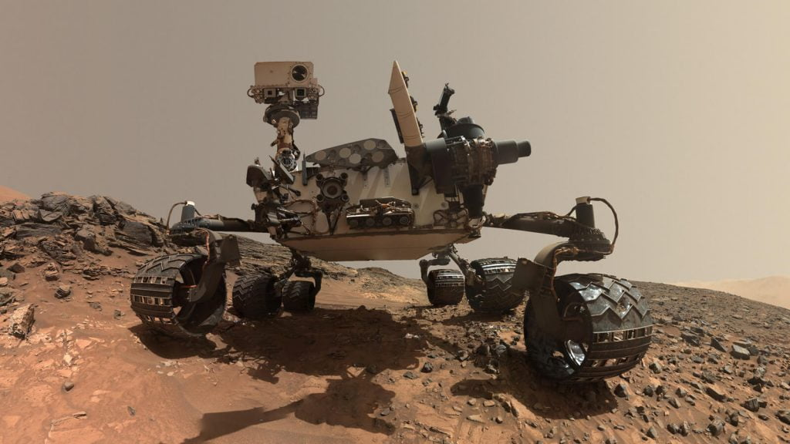
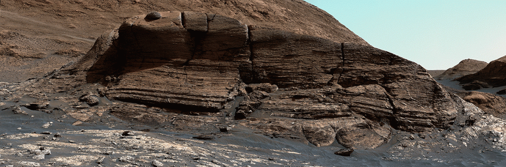

သိပ္ပံပညာရှင်တွေဟာ အင်္ဂါဂြိုလ်ပေါ်မှာ ဘယ်လို သက်ရှိမျိုးကိုပဲ တွေ့ရတွေ့ရ ရှာတွေ့ရဖို့ကို မျှော်လင့်နေကြပါတယ်။ သိပ္ပံပညာရှင် အများစုကတော့ အင်္ဂါဂြိုလ်ဟာ အတိတ်ကာလက သက်ရှိတွေ အသက်ရှင်သန်ရပ်တည်နိုင်တဲ့ သဘာဝ ပတ်ဝန်းကျင် တစ်ခု ရှိခဲ့လိမ့်မယ်လို့ အများစုက ယုံကြည်ကြပါတယ်။အချို့က တော့ အခုအချိန်ထိအောင်ကို အင်္ဂါဂြိုလ်ပေါ်မှာ အဏုဇီဝ သက်ရှိတွေ ဆက်လက်ရှင်သန်နေဆဲ ရှိနေနိုင်တယ်လို့ ယုံကြည်ကြပါတယ်။ အခုလက်ရှိ တွေ့ရှိရတဲ့ မိသိန်းဓါန် ထွက်ရှိတဲ့ နေရာတွေဟာ သက်ရှိတွေ ရှိနေနိုင်တယ် ဆိုတာကို ညွှန်ပြနေတယ်လို့ သူတို့က ထောက်ပြကြပါတယ်။
အင်္ဂါဂြိုလ်မှာ စူးစမ်းရှာဖွေရေး လုပ်နေတဲ့ Curiosity Rover နဲ့ ပါတ်သက်ပြီး ထူးခြားမှုတွေ ဒီရက်ပိုင်းမှာ တွေ့နေရပါတယ်။ ၂၀၁၂ ခုနှစ်မှာ အင်္ဂါဂြိုလ်ပေါ် ဆင်းသက်ပြီး ကတဲက ဒီယာဉ်ဟာ သူ့မှာပါတဲ့ လေဆာရောင်ခြည်သုံး ဓါတ်ခွဲစမ်းသပ်တဲ့ ကိရိယာကို အသုံးပြုပြီး ရောက်တဲ့ နေရာတိုင်းမှာ လေထုထဲမှာ ရှိတဲ့ မိသိန်းဓါတ်ငွေ့ ပမာဏကို တိုင်းတာ မှတ်တမ်းယူ ခဲ့ပါတယ်။ ပုံမှန် အင်္ဂါဂြိုလ်ရဲ့ လေထုထဲက မိသိန်းဓါတ်ငွေ့ ပမာဏဟာဆိုရင် ၀.၄၁ PPB (Parts per Billion) ပဲ ရှိပါတယ်။ PPB ဆိုတာက အပုံ သန်း တစ်ထောင်ပုံရင် ဘယ်နှစ်ပုံ ရှိလဲ ဆိုတာ ပြတဲ့ ယူနစ် ဖြစ်ပါတယ်။
အခုထိ နာဆာ အဖွဲ့ကြီးဟာ ဒီ Curiosity Rover ရဲ့ ပါတ်ဝန်းကျင် လေထုထဲမှာ မိသိန်းဓါတ် ပမာဏ ရုတ်တရက် မြင့်တက်သွားတဲ့ ဖြစ်စဉ် စုစုပေါင်း ၆ ကြိမ်တိတိ မှတ်တမ်းတင် ထားနိုင်ခဲ့ပါတယ်။ ဒါ့ပေမယ့် ဒီလိုတက်တဲ့ အကြိမ် အများစုမှာတော့ ဒီမိသိန်းဓါတ်ငွေ့တွေ ဘယ်ကနေ ထွက်လာလဲ ဆိုတာကို ရှာလို့ မတွေ့ခဲ့ ပါဘူးတဲ့။

နာဆာက သိပ္ပံပညာရှင်တွေဟာ အခုတွေ့ရှိချက်နဲ့ ပါတ်သက်လို့ အတော်ပဲ စိတ်အားတက်ကြွနေ ကြပါတယ်။ ဘာ့ကြောင့်လဲ ဆိုတော့ ကမ္ဘာပေါ်မှာဆို မိသိန်းဓါတ်ငွေ့ အားလုံးနီးပါး မှန်သမျှဟာ သက်ရှိတွေ ဆီကပဲ ထွက်ရှိလာတာ ဖြစ်လို့ပါ။ ဒီတော့ အင်္ဂါဂြိုလ်ပေါ်က မိသိန်းဓါတ်ငွေ့ ထွက်ရှိရာ နေရာကို ရှာတွေ့တာဟာ ကမ္ဘာပြင်ပမှာ သက်ရှိတွေကို ရှာတွေ့တာလို့ ပြောလို့ ရတာပေါ့။ အကယ်လို့ ဒီမိသိန်းဓါတ်ငွေ့တွေက သက်ရှိတွေဆီက ထွက်လာတာ မဟုတ်ဘူး ဆိုရင်တောင်မှ ဒါဟာ အင်္ဂါဂြိုလ်ပေါ်မှာ ရေ ရှိနေတယ် ဆိုတာကို ညွှန်ပြနေပါသေးတယ်။
လက်ရှိမှာတော့ Curiosity Rover ဟာ ဒီမိသိန်းဓါတ်ငွေ့ထွက်ရာ အရပ်ဆီ ဦးတည်လို့ ခရီးနှင်နေပါပြီ။ ဒါပေမယ့် သိပ္ပံ ပညာရှင်တွေ အနေနဲ့ ဒီထွက်ရှိတဲ့ မိသိန်းဓါတ်ငွေ့တွေက တကယ်ပဲ သက်ရှိတွေကနေ ထုတ်လွှတ်လိုက်တဲ့ မိသိန်းဓါတ်ငွေ့ ဟုတ်မဟုတ် ဆိုတာကတော့ သေချာပေါက် ပြောနိုင်ဖို့ စောလွန်းနေပါသေးတယ်။


July 21, 2021